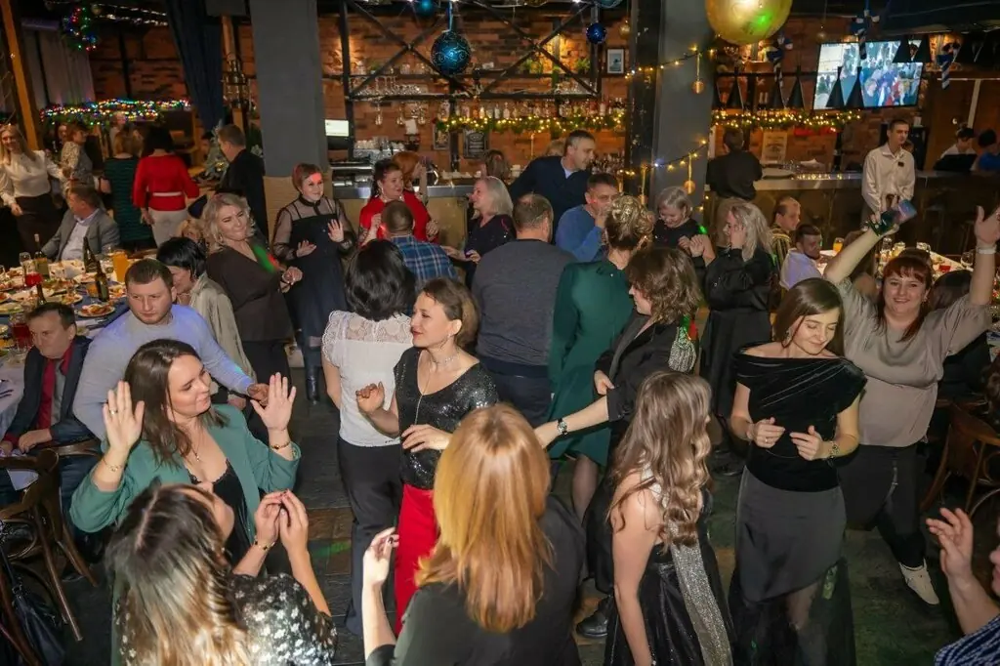

Красноярск+7 391 200-20-73

Гибралтар
Девять флагов наверху значат одно: заходите в гавань. Семейные праздники, концерты, диджей и быстрая кухня, зал на 120 гостей.
4,6 · 454 оценки
Порты захода
Полное меню с ценами добавим из вашего прайса. По воскресеньям закрыто, бизнес-ланч в будни.
Вахтенный журнал
Нравится приходить в этот ресторан отмечать семейные мероприятия. Вкусно и быстро готовят, приятная атмосфера.Екатерина Коцур
Вкусная кухня, вежливый и внимательный персонал. Работа диджея была на высоте, музыка была на любой вкус!Виктория Ковалёва
Очень понравилась кухня и скорость отдачи блюд, шеф-повару респект.Екатерина Ш.